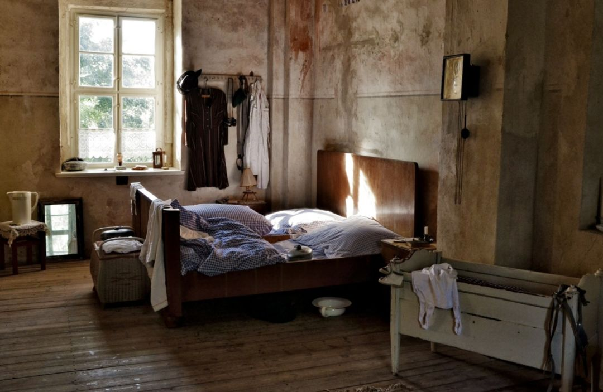

滞留在武汉，我们想回家
原文链接 备份链接 有武汉人滞留在外地，就有外地人滞留在武汉。 1月23日凌晨，武汉宣布封城。 2月10日，湖北省以外的地区陆续开工，这让滞留在武汉的人更希望知道出城的日期。 恰值人口高峰流动期，没有数据统计滞留在武汉的人到底有多少。但各 …

母亲在服满十年刑期后终于出狱归家，不料又赶上疫情爆发。将这两者同时消化、融入自己的生活着实不易。这样戏剧性的故事，就发生在今天的来信者半脸身上。分离、重逢、悲剧、喜剧、恐惧、快乐，时刻在我们的身上上演。将它们打碎、糅合，调剂出平淡，就是生活。

母女二人的岛
撰文：半脸
妈回来的第六天，我睡到中午醒来。前一夜在屋里熬夜，其实也未能写出多少字。我接上她后，五天几无独处。疫情当前，IPTV 的维修人员电话指挥我连好机器，她便坐在沙发上看电视剧，靳东主演并出品的《精英律师》。这部剧并不是 19 年爆款，但她看得入迷。在电视连好之前，我打开笔记本播放了剧。我说，你可以坐哪舒服点看。妈说，不用。就这样很好。电脑于是被摆成电视机样，离她总会有半米距离。她看得克制，看了三集便会停止。
这是她出狱的第六天，我不知道该如何与她相处。在教她煤气灶的使用方式后，烧菜时泄出来的气炸了一次。我说，所以阀一定要开的小一点。她说，现在这得多少钱。我说，一千多吧，但也得等到师傅。电饭锅她已煮出了三锅饭。她说，真可怕。便不再触碰煤气阀。吃饭时她讲，打饭时那人多缺德么你知道么，把丸子都捞走了，后面一个人就只能分一个。就这样的丸子。她手指比划出个圈。我问，那队长不知道么。又问菜咸么，我其实加了两遍盐。她说刚刚好。那队长不知道，知道不就完了么。

还有些时候，她说的很快。那里的生活你根本无法想象。重音在根本，她握着东西在空中点了两下。在她的说速里，事件接连爆裂，语调却像是介绍路上奇景。我则点头将话题引到别处。我说姥姥吃蒸鸡蛋糕时不要香油。拌黄瓜时要欻成丝。在胃口好的时候，梭蟹肥时放姜丝蒸过，她能吃三只。我手机里其实有照片，里面的姥越来越瘦，表情渐如陷茫然的梦里。我也可能困惑，没有把照片一一展示的魄力。
这毕竟是十年刑期，回望本身就是一项大工程。在接她回家前，我跟发小开口，我怕人被剥夺了快乐的能力。类似的矫情念头有如荆棘。我在荆棘丛中看天空大小。发小回复得慎重又聪明。说，这个能否愉快的权利应该交给她。我有点愤怒，但也怒无所指。接人的前夜，该城大雾。酒店旁破败的旧日大舞厅，就像是一颗尘封了十多年的心脏。凌晨看时依旧灰暗。雾气、闹市与疏离，我没时间细加琢磨。整夜怕酒店静鬼。凌晨我紧紧戴着口罩，拎衣服走着，却看到一片南归的大鸟，静静地互引，飞过监区上方。……接上妈后，离开法务的警车，我们走往火车站，广场上她脚步飘忽，确是一条诡异的直线。我拉她新穿的棉服衣角，偶尔胳膊肘碰撞。我有点尴尬，像一根导航，字正腔圆地给她讲事物的变化。
重重变化正被悄然定格。彼时疫情已成实时热搜。我递交衣服时塞了医用口罩，但她没有收到。后又拿出新的叮嘱她戴好。她听了建议，别耳朵时手微微地抖。车站人流密集，亦是省城中转大站。站内并无预防提示，有许多孩子毫无防护。我说，武汉封城了。能听到邻座也在议论疫情。一切都尚不明确。妈点点头。这之后六天，我看到了三篇该站停靠的火车急寻报道。脑中便不断回想路线场景，是否有咳嗽的人离我们过近，他们谁可能携带病毒？根本无从确定。候车时对座男人猛咳了起来，明明隔着几米。但我说，我们起来排队吧。便带妈走到靠墙一侧，告诉她人工闸口和自动的区别。我在焦虑这些时，妈坐在电脑前看剧。每一集她都似乎看过，但又都未能看完。她说，突然就给你停了，就是不让你看完。而她们端正地坐着，也不能串到别的房去。后来有人告诉她，现在网上就能找着，看什么都有。后入监的人推荐了部电影。她说，那电视剧能找出来，她一定要反复看了。
到家后没多久，夜里我有了感冒症状。鼻腔略有不适，瞬间就恐惧起来。推了朋友的饭局。对方也很警惕，发来很忙以后再见的表情。我自觉老实在家，时时关注全国防疫，不断翻刷朋友圈和各门户网站。财新，央视，丁香园，查看肺炎症状。觉得脱轨般的不现实。而妈收拾起故去的姥姥的房间，像活在另一轨道里。她很振奋，也很愉快。她扔掉库存无用的旧物，不时拿起一样东西，笑眯眯地说物的来历。怎么会保存的这么好，她说。我则转述疫情，说这病就像当年广东的 SARS。那时电视还没通好，她接受着我说的消息。SARS 时她去看望某得过病的大姐，他们都不敢上楼，就她敢上去。她记得当年的钟南山。路边有一家药厂曾起死回生。很快，旧物摊满房间。它们只在款式和成色上显出年轮，她有如探险。将屋子布置成雨林。
探险时时发生。我们下火车转了地铁，走回街区时，妈说，其实没什么变化嘛，还以为真翻天覆地，她们说变化老大了。我说，主要还是网络，你看不到的部分。她说是。年三十时，五福要开奖了，我请她来点击。回答她红包最大有过多少。妈站起来，弯身伸出食指，另一手接过手机。我也站起来了，看她点出 3.08 元。我说，还不错，以后这可能就是过年传统了。我们听主持人互动广告。她说，那马云是很厉害。我嗯了一声。后来她说错应用名字。但电视剧的演员，她记得比我清楚。
我不知道马云能解释几年的时代。妈收拾起了家。我们基本哪儿也没去。更不曾出门远逛，去看看这城的变化。第六天中午，我晚睡起来，看到桌布换成她找出的旧布料，手写本整体被移。我唉了一声，你收拾桌子，看这些本子了么？问的已经小心。妈站在客厅另一头，穿着找出的旧塑料围裙。没有啊，她说，我知道你的毛病，你灯亮着我都没进去给你关。我说，这些本子真的不能看，谁都没法给看。她说，你怎么这么不信任人呢，我是你妈，再说了看了又能怎么样呢。我说，真的不行。
我们就这么争执了起来。我有些无力，这无力感无法溯源。监区，落叶，坠落的大鸟。最后我出了家门，走之前给她重新连好电视网线。我说我会回来做晚饭，她没再出声。这城我熟，却也没什么地方可去。这时还没强调要洗手的事。走进商场，迎面还有人互相避让。坐下后，我看到一对情侣戴着口罩大笑。而店员也戴着口罩温和讲话。另一在整理笔记的顾客与我隔着。她专注而认真。就是这店里寥寥可观的人。彼时还有这种场面，延续着原本生活的面貌。我有点想哭。但哭的莫名其妙，是感动于自己出门后的发现，还是可怜这份无力可为？我给某篇武汉日记留了言——我们的恐惧也无法遮挡的深刻快乐是什么？
往内自观，我太害怕了。
我一想到要解释这十年，就觉得疲累。它们已然过去。但却在彼刻变成攻击我的战场。那里原本早已焦荒。我看着凌乱又色泽大变的客厅，曾想也许是我的旁观，而让那十年时光在翻出的旧物上还魂。它们——蜕皮的深色块料，不明年代的帽子，过保质期的美妆用品，停用的纸张书本电器，并不是什么温馨的回忆载体，而只是被弃用十年的尘封物件，无辜又蛮横地摊开。要以其价值，覆盖着屋内十年生活的平淡。乱出了一片失控丛林。它们该慢慢地来。

妈指责我不信任人，是不是就因为我态度不好所以表亲们没来，甚至对姥是不是就这个态度，也不用写了，写的东西有人看么，人品不行还做什么。我反驳了几句，这十年还不够证明么。
我们都有些歇斯底里。或者是我错了，前几天的平和不过遮掩。像覆盖了东北的白雪，但还没完全渗入土地。我接她回来，疫情当前，不知该向哪主动，释放我们对生活的期待。冲突暴露的不是智力问题，而是情感。而妈坐在黄色布艺沙发上，用旧而做工精细的棉衣捂到脖子，转过头去，别扭的像暴君入魂的孩子。我靠着挂衣服的铁杆。真实的意图一时无法传达，所说的为误解添加砝码。
我们就这么开始了生活。早有一个无法名状的表达之跃困扰着我。我说不出来。原本就已十年的中空，有很实在的修补要做。第七天上午，我们又就信任与否争执了几句。我请出长辈来劝，妈却没有说话……最后我决定放手，就算她判断我是个坏人也不再解释。给她尊重与自由。妈继续收拾着屋子，出门买菜。我来做饭，算是又恢复了平和。她看起电视新闻，跟我讲报道内容。她出门看到，卖东西的谁谁说可能要封城，方便面都要限购六包了。她也紧张起来，不再让我出门。我有时候待累了，说要回屋静静，她说你去，自己坐在沙发上，不知道在想些什么。
妈和曾经的狱友联系，对方待她很好，分过食物给她。那阿姨现正在家带孩子，也哪都不去了。妈学给我，你知道她们怎么分鸡腿么？就那么一小丝儿。她们煲起电话粥，聊疫情和微信，她没提“我女儿”这三个字。后来等她电话起头就说到我，我想，应该是真没问题了。
就像是在一处荒岛上再次相逢。而互为慌乱与忐忑。我则在荒岛上习住太久，重又遇到有心同住的人类。她说她是我妈妈，而我徒生一种窘迫与自责。
家里的挂钟安了电池，指的时间累日延迟。安电池之时，妈整理起仓库样的书房，两只腿快速地动着。她看到什么，便穿上试试。说，你看这个多好，真不用买不是么。我说，不用那么着急，慢慢来。要不一时也没事情做。屋内捱不住时间，电器门窗各有问题。大风袭卷的某夜，坏损的贴胶拉门总被风顶开，我于是贴上一大块深灰色墙纸。看来格外显眼。如今时间特殊，一时也找不到师傅。妈看了会儿电视，便回了屋里。我翻着手机，又接受了一轮信息扫荡。一时激愤也发了条状态，发现并无人关心。或者他们看了，只是彼此沉默。我想起了妈，于是又从床上坐起，走过那报慢时间的钟。我说，你这么早……话没说完，听到歇灯的屋内，已响起短重的鼾声。
后记（第六日之后）
妈坐在客厅，托手忍受夜晚袭击的腮肿疼痛，常是不发一言。除非我问她，或她想起了什么的喊我小名。然而客厅偏冷，停了暖气缴费的夜越发凉起。妈却不要电热毯。电视机的色差调过后，妈笑说，终于可以看见他们的眼睛了。吃过药，她好了些。我则穿着长裤棉衣，夜晚在屋里打字。习惯这有如洞穴一样的生活。那么诱惑我们的烛光会是什么。妈上午赶着市场允许营业的时间买菜，被催赶时匆匆收尾，像母兽叼回入洞的食物。又特别说起某卖菜的阿姨很好。我则期盼安全感能在这一餐一饭中架构起来。隔了三天出门，再次走近商圈，过于静空的道路或者双层布口罩的压抑，让我觉得眩晕。货架上的商品几无人动，甚至许多亮灯的商家并无任何活人。有一些毛绒的挂件依旧可爱，却令人想到它们已是有了污名的商品。到家后，我用滴露兑水擦拭书包、外套、手机和公交卡。妈反复问，外面是不是可冷了。我也反复回答，不冷，就是呼吸太难了。
后来日子似乎渐入平淡。我晚睡晚起，醒来边做午饭边听财新。偶尔焦虑与疲乏侵袭，积压到晚上，便无法轻易入睡。谁能想到现在这一切的发生？间或觉得这状况有些可怜。比起它缓慢生长的速度，摧毁则如久埋而喷涌的岩浆。……有太多事情无法弥补。只能先看向它的久破不堪。十五这天，妈出门，买回了许多菜。一袋五元的海菜，我说她买错了。她随后说我菜做的不行。又说，是红烧做得太好，其他就一般了。没多久我看到群聊消息，朋友提醒近处有确诊病例。我身体正觉得不适。查清消息后，我记下要交代的几句话。想到妈可能比我更怯于面对这一切，便决心振奋。并没有更优的解来度化这一切。只有成熟的面对，与深刻的快乐。我信任深刻的快乐。
自征文以来，我们收到了大量来稿，如实写下了他们在疫情期间的所见所闻，这会是一份真挚而沉重的纪录，我们会留存它。
投稿邮箱：anonymous@owspace.com

《单读 23 · 破碎之家》已经上市****
*它又意外地应景了*
***点击小程序购买阅读***
原文链接 备份链接 有武汉人滞留在外地，就有外地人滞留在武汉。 1月23日凌晨，武汉宣布封城。 2月10日，湖北省以外的地区陆续开工，这让滞留在武汉的人更希望知道出城的日期。 恰值人口高峰流动期，没有数据统计滞留在武汉的人到底有多少。但各 …
原文链接 备份链接 _ _ _ _ 导语: 武汉疫情发生后，牵动人心。它是中国自SARS以来最严重的公共卫生事件，也是我们这代人不可遗忘的记忆。疫情期间，微思客将开启“疫情”专题，诚邀各位专家及读者来稿，我们会定期更新优质稿件，这些记录都 …
原文链接 备份链接 邵阳日记 _ 小新 _ _ _ _ _ _ 我的家在湖南省邵阳市邵阳县塘田市镇，1月10日，我从广州的学校回到老家。本来准备好过一个安逸的寒假，结果突如其来的疫情让周围的一切都不再平静。 _ _ _ _ ●口罩● _ …
原文链接 备份链接 2020年的这个春节，对吕乔来说格外重要。这是她和丈夫在湖北襄阳买房定居，拥有属于自己小家的第一个年头。 因为当地的习俗，新房第一年，吕乔要把爸爸妈妈、公公婆婆全部接来，和他们一家三口一起过年，象征着往后的日子红红火 …
原文链接 备份链接 ※文中涉及案例均为“反面教材”，切勿模仿。特殊时期，请大家不要存在侥幸心理，一定要规范佩戴口罩。 大家这几天还好吗？ 在疫情态势依然紧张的当下，社长最近一直积极响应号召龟缩在家，默默地 享受 承受着闲出屁来的日子，不出 …